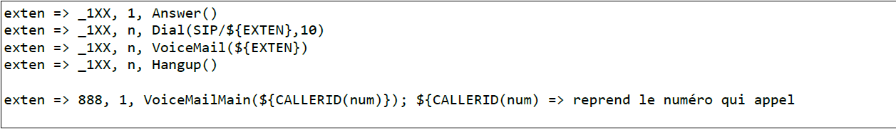
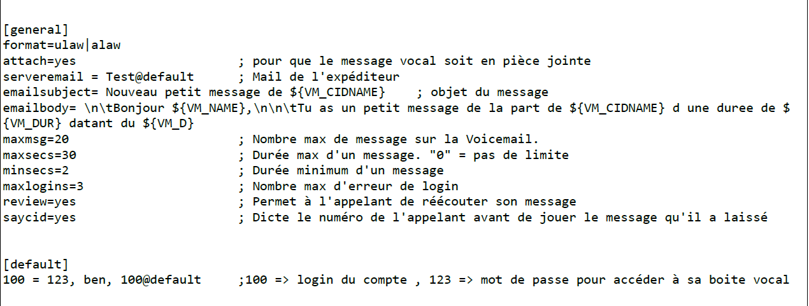

messagerie
Passer un appel simple avec messagerie
- Editer le fichier extensions
nano /etc/asterisk/extensions.conf

- Configuration du VoiceMail
- On copie le fichier original
cp /etc/asterisk/voicemail.conf /etc/asterisk/voicemail.conf.original
- On vide le fichier
> /etc/asterisk/voicemail.conf
- Et on édit le fichier
nano /etc/asterisk/voicemail.conf

- Reload les paramètres dans la console Asterisk
asterisk -rvv
; ouvrir la console
reload
; recharger pour prendre en compte les changements